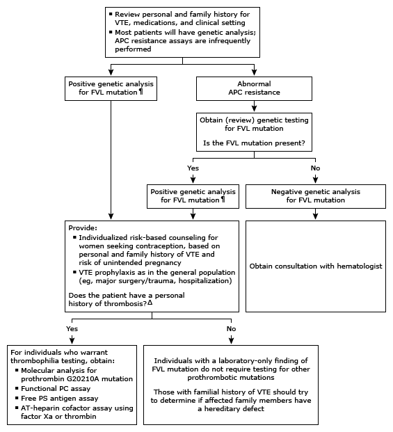

Initial evaluation of positive factor V Leiden or abnormal activated protein C resistance in adults*

This algorithm is intended for use with additional UpToDate content on FVL and APC resistance.
VTE: venous thromboembolism; APC: activated protein C; FVL: factor V Leiden; PC: protein C; PS: protein S; AT: antithrombin. * Genetic testing is reported as either positive or negative. APC resistance assay is reported as positive, borderline, or negative. Interpretation of a specific abnormal result should be based on the reference range reported with that result. ¶ Routine testing of first-degree relatives with FVL mutation is not indicated, especially in cases in which the information will not alter management. Δ Patients with FVL are at increased risk for other thrombophilic defects. Results for PC, PS, and AT deficiency may be inaccurate in the setting of acute VTE or oral anticoagulant therapy (with warfarin or a direct oral anticoagulant) and may be deferred until the acute episode has resolved and the patient is no longer on anticoagulation. The antigenic levels of PC, PS, and AT, however, are not affected by the direct oral anticoagulants. In addition, some functional assays for PS can give falsely low levels in the presence of FVL mutation.